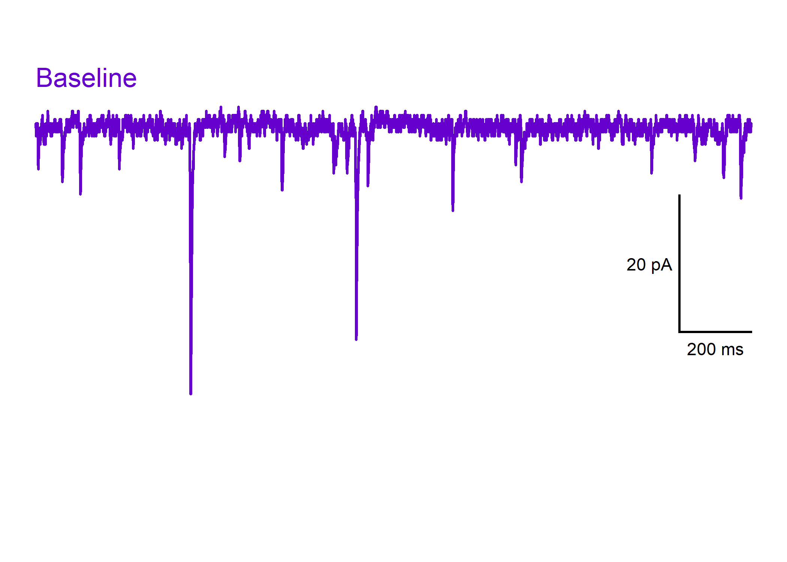

patchclampplotteR provides a set of user-friendly tools for electrophysiologists who want to plot and analyze data from whole-cell patch clamp electrophysiology recordings. Here’s some of the functions that this package can do (see below for examples!):

- Plot raw evoked or spontaneous current amplitudes over time for all recordings at once.
- Normalize current amplitudes relative to mean baseline values.
- Plot normalized current amplitudes over time for all recordings.
- Plot summary data for a specific treatment, grouped by sex.
- Plot representative spontaneous current traces from an .abf file with a scale bar.
- Compare spontaneous current amplitude and frequency
- Compare variance parameters to help determine presynaptic mechanisms.
- And more!
Examples
Plot raw evoked currents for a specific cell:
raw_eEPSC_control_plots <- plot_raw_current_data(
data = sample_raw_eEPSC_df,
plot_treatment = "Control",
plot_category = 2,
current_type = "eEPSC",
parameter = "P1",
pruned = "no",
hormone_added = "Insulin",
hormone_or_HFS_start_time = 5,
theme_options = sample_theme_options,
treatment_colour_theme = sample_treatment_names_and_colours
)
raw_eEPSC_control_plots$AO
Plot evoked current amplitudes summarized by sex:
plot_summary_current_data(
plot_category = 2,
plot_treatment = "Control",
data = sample_pruned_eEPSC_df$all_cells,
current_type = "eEPSC",
parameter = "amplitude",
include_representative_trace = "no",
#y_axis_limit = 175,
signif_stars = "yes",
t_test_df = sample_eEPSC_t_test_df,
hormone_added = "Insulin",
large_axis_text = "no",
shade_intervals = "no",
hormone_or_HFS_start_time = 5,
treatment_colour_theme = sample_treatment_names_and_colours,
theme_options = sample_theme_options
)
Plot a representative recording trace showing spontaneous currents from a raw Axon Binary File (.ABF):
plot_spontaneous_current_trace(
file = sample_abf_file,
plot_colour = "#6600cc",
include_scale_bar = "yes",
plot_episode = "epi1",
scale_bar_x_length = 1,
scale_bar_y_length = 10,
plot_x_min = 1,
plot_x_max = 3
)
Installation
You can install the development version of patchclampplotteR from GitHub with:
# install.packages("pak")
pak::pak("christelinda-laureijs/patchclampplotteR")And then load the package with library():
Analysis
To learn about how to convert raw .abf data in Clampfit to .csv files for this package, please see the vignettes Evoked Current Analysis and Action Potential Analysis.
Using patchclampplotteR
Please see the Getting Started page for a walk-through of the major functions of this package.